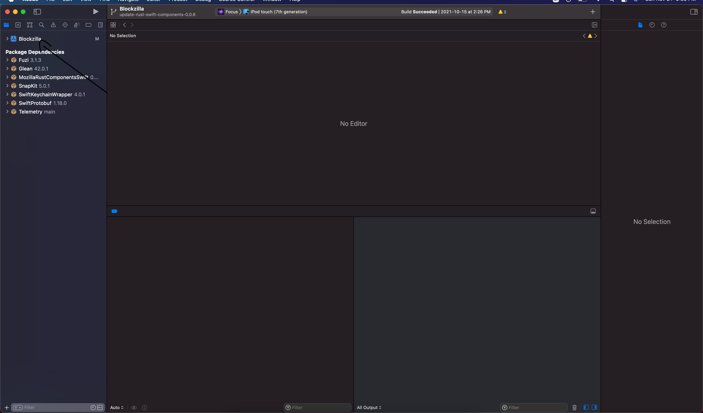
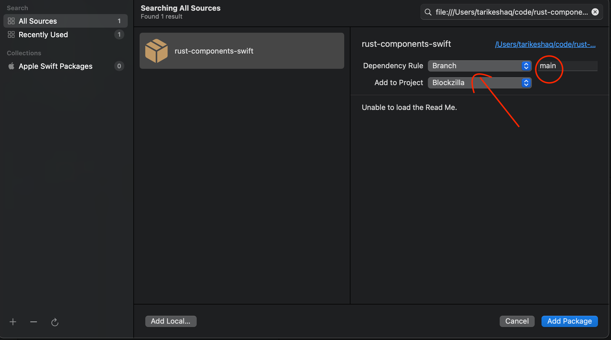

How to locally test Swift Package Manager components on Focus iOS
This is a guide on testing the Swift Package Manager component locally against a local build of Focus iOS. For more information on our Swift Package Manager design, read the ADR that introduced it
NOTE - This guide is slightly out of date and needs to be updated. Better instructions can be found in the instructions for Firefox, but that process needs some Focus-specific tweaks.
This guide assumes the component you want to test is already distributed with the
rust-components-swiftrepository, you can read the guide for adding a new component if you would like to distribute a new component.
To test a component locally, you will need to do the following:
- Build an xcframework in a local checkout of
application-services - Include the xcframework in a local checkout of
rust-components-swift - Run the
make-tagscript inrust-components-swiftusing a local checkout ofapplication-services - Include the local checkout of
rust-components-swiftinFocus
Below are more detailed instructions for each step
Building the xcframework
To build the xcframework do the following:
- In a local checkout of
application-services, navigate tomegazords/ios-rust/ - Run the
build-xcframework.shscript:
$ ./build-xcframework.sh --focus
This will produce a file name FocusRustComponents.xcframework.zip in the focus directory that contains the following, built for all our target iOS platforms.
- The compiled Rust code for all the crates listed in
Cargo.tomlas a static library - The C header files and Swift module maps for the components
Include the xcframework in a local checkout of rust-components-swift
After you generated the FocusRustComponents.xcframework.zip in the previous step, do the following to include it in a local checkout of rust-components-swift:
- clone a local checkout of
rust-components-swift, not inside theapplication-servicesrepository:git clone https://github.com/mozilla/rust-components.swift.git - Unzip the
FocusRustComponents.xcframework.zipinto therust-components-swiftrepository: (Assuming you are in the root of therust-components-swiftdirectory andapplication-servicesis a neighbor directory)unzip -o ../application-services/megazords/ios-rust/focus/FocusRustComponents.xcframework.zip -d . - Change the
Package.swift’s reference to the xcframework to point to the unzippedFocusRustComponents.xcframeworkthat was created in the previous step. You can do this by uncommenting the following line:
and commenting out the following lines:path: "./FocusRustComponents.xcframework"url: focusUrl, checksum: focusChecksum,
Run the generation script with a local checkout of application services
For this step, run the following script from inside the rust-components-swift repository (assuming that application-services is a neighboring directory to rust-components-swift).
./generate.sh ../application-services
Once that is done, stage and commit the changes the script ran. Xcode can only pick up committed changes.
Include the local checkout of rust-components-swift in Focus
This is the final step to include your local changes into Focus. Do the following steps:
-
Clone a local checkout of
Focusif you haven’t already. Make sure you also install the project dependencies, more information in their build instructions -
Open
Blockzilla.xcodeprojin Xcode -
Navigate to the Swift Packages in Xcode: 

-
Remove the dependency on
rust-components-swiftas listed on Xcode, you can click the dependency then click the- -
Add a new swift package by clicking the
+:- On the top right, enter the full path to your
rust-components-swiftcheckout, preceded byfile://. If you don’t know what that is, runpwdin while inrust-components-swift. For example:file:///Users/tarikeshaq/code/rust-components-swift - Change the branch to be the checked-out branch of rust-component-swift you have locally. This is what the dialog should look like: 
- Click
Add Package - Now include the
FocusAppServiceslibrary.
Note: If Xcode prevents you from adding the dependency to reference a local package, you will need to manually modify the
Blockzilla.xcodeproj/project.pbxprojand replace every occurrence ofhttps://github.com/mozilla/rust-components-swiftwith the full path to your local checkout. - On the top right, enter the full path to your
-
Finally, attempt to build focus, and if all goes well it should launch with your code. If you face any problems, feel free to contact us